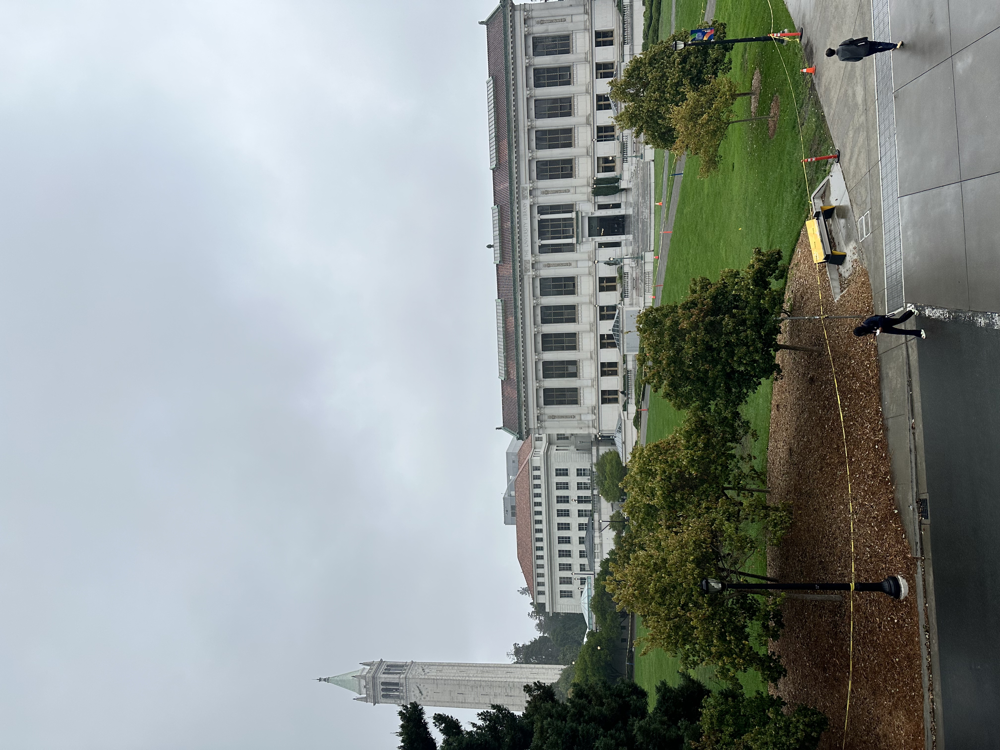
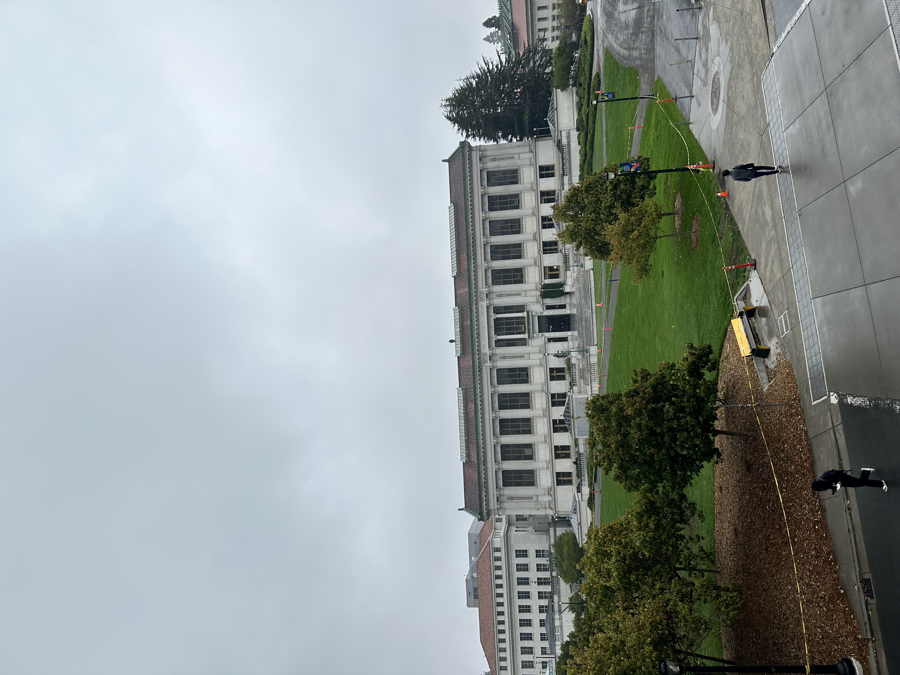
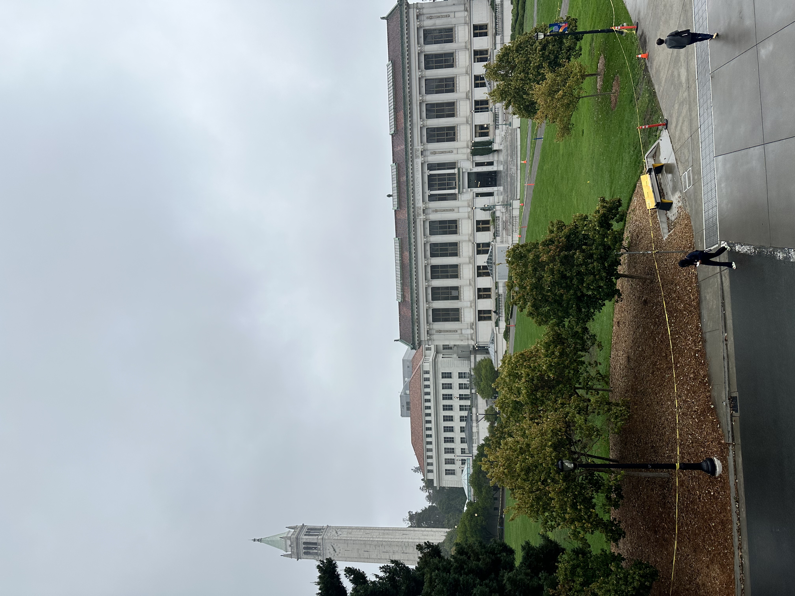
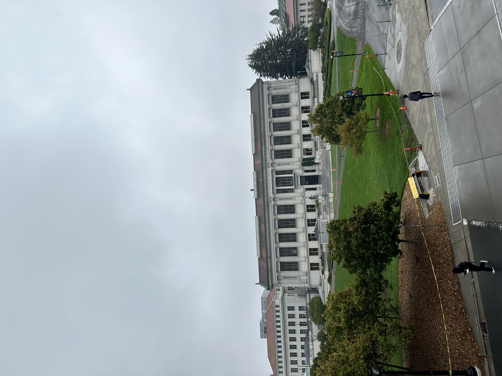
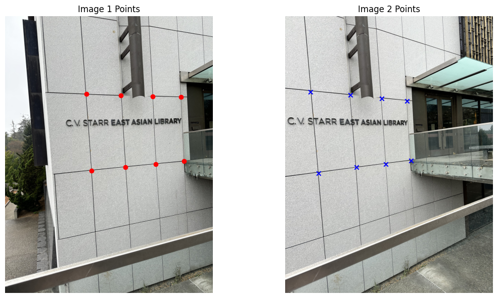
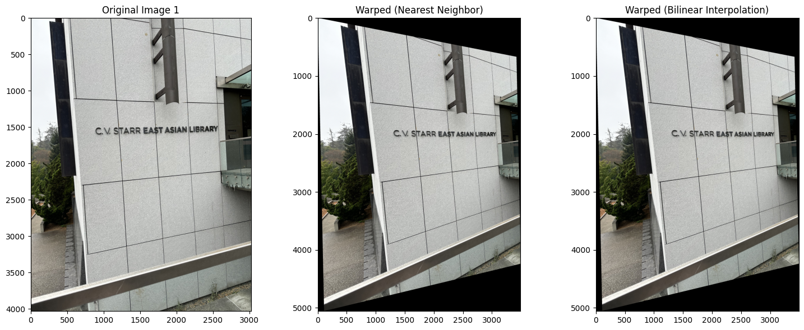
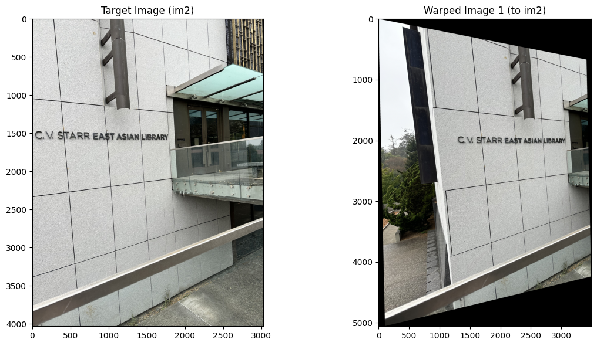
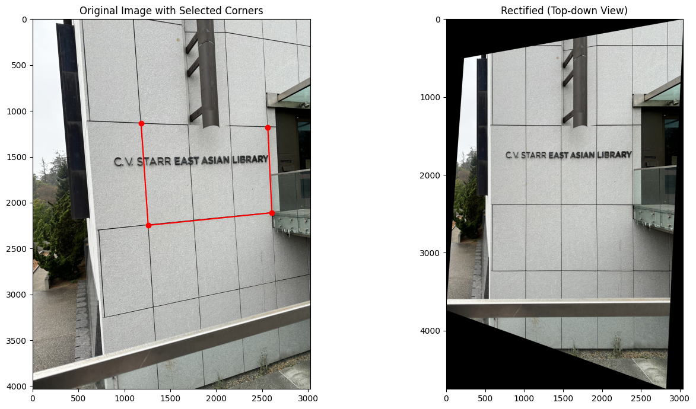
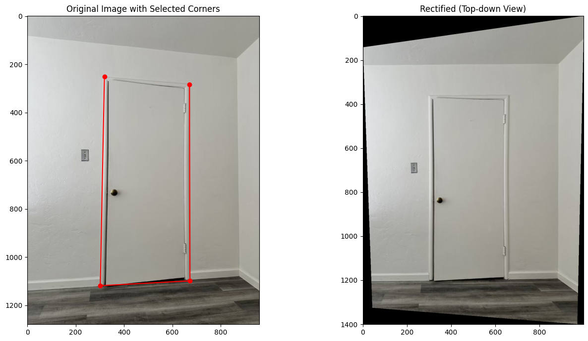
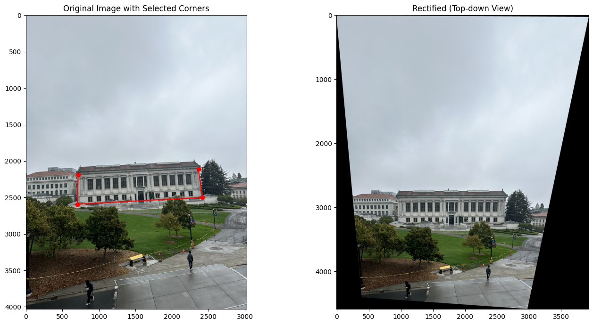

A.1 Shoot and Digitize Pictures
I captured two sets of photographs by rotating my camera around a fixed center of projection. Each pair of images has a 40–60% overlap for reliable feature matching.

 



Example pairs of images with projective transformation.
A.2 Recover Homographies
To align two images under a projective transformation, we must estimate the
homography matrix H such that p' = H·p.
The transformation is computed from pairs of corresponding points
(x, y) → (x', y') between the two images.
Point Correspondences
I manually selected more than four point correspondences using the website tool given. The correspondences are visualized below.
Corresponding points visualized between the two images.
System of Equations
For each correspondence, two linear equations are generated to form the system
Ah = b, where h contains the 8 unknown homography parameters.
For each (x, y) → (x', y'): [-x, -y, -1, 0, 0, 0, x*x', y*y'] * h = -x' [ 0, 0, 0, -x, -y, -1, x*y', y*y'] * h = -y'
Implementation
Below is my implementation of computeH() using the Direct Linear Transformation (DLT) method and least-squares fitting:
Recovered Homography Matrix
H = | 1.4248282 2.6777553e-02 -1280.97236 | | 2.5172202e-01 1.25429927 -452.174673 | | 1.3775899e-04 -2.4165614e-08 1.00000000 |
Computed homography mapping Image 2 → Image 1.
The resulting homography accurately aligns planar regions between the two images, enabling seamless warping and blending in later stages.
A.3 Warp the Images
I implemented inverse warping with two interpolation methods:
- Nearest Neighbor: Fast but blocky results.
- Bilinear: Smoother and visually pleasing, but slower.
Python Implementation
Algorithm: Warp Image Using Homography H
Input:
- Image im
- Homography matrix H
Steps:
1. Compute inverse homography H⁻¹.
2. Determine output bounds (min_x, max_x, min_y, max_y).
3. For each pixel (x_out, y_out) in output image:
a. Map back to input coordinates (x_w, y_w, 1) = H⁻¹ · (x_out, y_out, 1).
b. Normalize: x_w = x_w / w, y_w = y_w / w.
▸ Nearest Neighbor:
- Round (x_w, y_w) to nearest integer.
- Assign pixel value from nearest location.
▸ Bilinear Interpolation:
- Find floor(x_w), floor(y_w) → (x₀, y₀).
- Compute fractional parts dx, dy.
- Interpolate using 4 neighboring pixels:
(1−dx)(1−dy)*I[y₀,x₀] + dx(1−dy)*I[y₀,x₀+1]
+ (1−dx)dy*I[y₀+1,x₀] + dxdy*I[y₀+1,x₀+1]
4. Store result in warped image.
Output:
- Warped image aligned by H.
Warped Images
Warped image using Nearest Neighbor interpolation.
Warped image comparison.
Rectification Example
Below are 2 rectified images where a tilted view was transformed to appear fronto-parallel.
  Rectification using manually selected correspondences.
A.4 Blend the Images into a Mosaic
I warped the second image into the coordinate frame of the first (reference) image using the computed homography. Each mosaic was created from a pair of input images, aligned within a shared mosaic canvas determined by their transformed corners.
To blend overlapping regions, I used alpha-weighted averaging with a linear falloff mask near the image boundaries. This smooth transition reduces visible seams and creates a more natural mosaic. Since each mosaic consists of two images, simple weighted blending was sufficient and no multi-band blending was required.
To reduce edge artifacts where two warped images overlap, I generated an alpha mask for each image.
Pixel weights were higher at the image center and gradually decreased toward the edges, forming a smooth falloff.
This ensures that in overlapping areas, both images contribute proportionally instead of one abruptly overwriting the other.
The blended pixel value at each position (x, y) was computed as:
mosaic(x, y) = (α₁ * I₁(x, y) + α₂ * I₂(x, y)) / (α₁ + α₂)
This weighted averaging allows for smooth transitions between images, significantly reducing sharp seams or exposure jumps along image boundaries. Although minor ghosting may occur when alignment is imperfect, the overall result appears visually coherent and continuous.
Mosaic Example 1
Resulting mosaic from image pair 1.
Mosaic Example 2
Resulting mosaic from image pair 2.
Mosaic Example 3

Resulting mosaic from image pair 3.
Mosaic Example 4
Resulting mosaic from image pair 4.
Weighted blending effectively reduced hard edges and improved the visual continuity of each mosaic. Minor ghosting may appear if alignment is slightly off, but overall the results demonstrate successful image registration and blending.